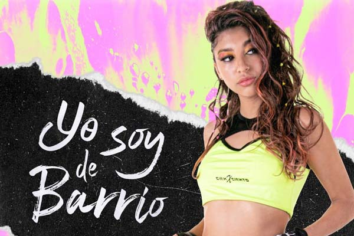

Lula RKT hace su primer estreno
Ludmila Celeste Álvarez, más conocida como “LULA” (@lula_rkt), presenta su primer single “YO SOY DE BARRIO” acompañado de un videoclip grabado en un club de box donde interpreta a una boxeadora de barrio que pelea contra las adversidades de la vida. LULA es cantante y compositora de los géneros urbanos (rap, Rkt, reggaetón, trap) oriunda de Quilmes, Provincia de Buenos Aires. A los 7 años descubrió su talento y pasión por el canto, y comenzó a estudiar en el conservatorio de música Bellas Artes de Quilmes, donde no solo se profesionalizó en el canto sino también como pianista y guitarrista.
